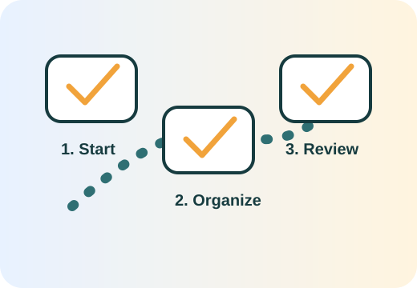

Open the dashboard
Use the dashboard as the home base for your progress, exports, and next steps.
Start here
A private, browser-based starter assessment that tells you which checklist, dashboard, decision helper, or worksheet to use first.

Answer a few practical questions. The tool will suggest which Will Checklist page to open next.
Answer the questions above, then build your path.
Use the dashboard as the home base for your progress, exports, and next steps.
Break planning into one short session per day instead of trying to complete everything at once.
Flag complexity before deciding whether to research attorney-first, hybrid, online, or official-resource options.